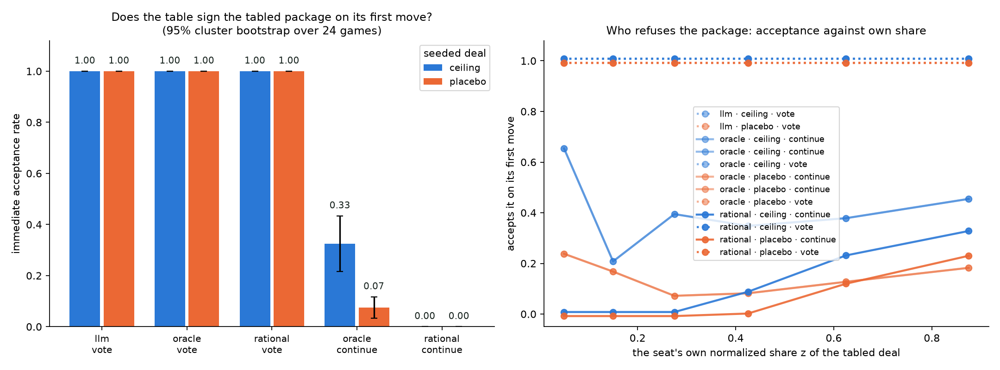

Does anyone sign the best deal when it is already on the table?
The five-arm campaign left one question open: when a lineup of computable negotiators fails to close, is that a search failure (the table never finds the good region before the deadline) or a judgment failure (it is shown a good deal and declines)? This experiment deletes the search problem. Before any seat speaks, a neutral non-voting facilitator tables the instance's ceiling deal — the feasible package maximizing the sum of normalized surpluses, which is exactly the deal the campaign's normalized score calls 1.0. The only thing left to do is vote. A placebo arm tables a mediocre-but-signable deal instead: the control that separates recognizing a good deal from accepting whatever is standing. Same 24 frozen games, same seeds, same private information.
What each lineup did with the package
Immediate acceptance is the preregistered primary: every seat's first move of the episode is an ACCEPT of the facilitator's package. Intervals are 95% cluster bootstraps over the 24 parameter sets with each set's five seeds resampled together. The shaded rows are the frozen unseeded arms, carried for reference — nothing was tabled in them, so their acceptance columns are zero by construction and only deal rate and score are comparable.
| arm | episodes | immediate acceptance | deal rate | P(final == seeded) | normalized score | seats accepting the package |
|---|---|---|---|---|---|---|
all_oracleceiling deal · one forced up/down vote | 120 | 1.000[1.000, 1.000] | 1.000[1.000, 1.000] | 1.000[1.000, 1.000] | 1.000[1.000, 1.000] | 1.000[1.000, 1.000] |
all_oracleplacebo deal · one forced up/down vote | 120 | 1.000[1.000, 1.000] | 1.000[1.000, 1.000] | 1.000[1.000, 1.000] | 0.678[0.640, 0.713] | 1.000[1.000, 1.000] |
all_rationalceiling deal · one forced up/down vote | 120 | 1.000[1.000, 1.000] | 1.000[1.000, 1.000] | 1.000[1.000, 1.000] | 1.000[1.000, 1.000] | 1.000[1.000, 1.000] |
all_rationalplacebo deal · one forced up/down vote | 120 | 1.000[1.000, 1.000] | 1.000[1.000, 1.000] | 1.000[1.000, 1.000] | 0.678[0.640, 0.713] | 1.000[1.000, 1.000] |
all_oracleceiling deal · full game, offer stands | 120 | 0.325[0.217, 0.433] | 0.783[0.700, 0.867] | 0.325[0.217, 0.433] | 0.716[0.638, 0.792] | 0.450[0.347, 0.557] |
all_oracleplacebo deal · full game, offer stands | 120 | 0.075[0.033, 0.117] | 0.700[0.567, 0.825] | 0.075[0.033, 0.117] | 0.628[0.506, 0.740] | 0.180[0.110, 0.258] |
all_rationalceiling deal · full game, offer stands | 120 | 0.000[0.000, 0.000] | 0.233[0.117, 0.367] | 0.025[0.000, 0.075] | 0.177[0.089, 0.279] | 0.157[0.118, 0.200] |
all_rationalplacebo deal · full game, offer stands | 120 | 0.000[0.000, 0.000] | 0.258[0.142, 0.384] | 0.008[0.000, 0.025] | 0.201[0.115, 0.297] | 0.047[0.032, 0.062] |
all_llmfrozen five-arm campaign — nothing tabled | 120 | 0.000[0.000, 0.000] | 0.958[0.925, 0.992] | 0.000[0.000, 0.000] | 0.873[0.833, 0.911] | 0.000[0.000, 0.000] |
all_oraclefrozen five-arm campaign — nothing tabled | 120 | 0.000[0.000, 0.000] | 0.875[0.817, 0.925] | 0.000[0.000, 0.000] | 0.791[0.735, 0.843] | 0.000[0.000, 0.000] |
all_rationalfrozen five-arm campaign — nothing tabled | 120 | 0.000[0.000, 0.000] | 0.233[0.133, 0.350] | 0.000[0.000, 0.000] | 0.189[0.110, 0.279] | 0.000[0.000, 0.000] |
one_oraclefrozen five-arm campaign — nothing tabled | 120 | 0.000[0.000, 0.000] | 0.508[0.417, 0.600] | 0.000[0.000, 0.000] | 0.461[0.376, 0.545] | 0.000[0.000, 0.000] |
one_rationalfrozen five-arm campaign — nothing tabled | 120 | 0.000[0.000, 0.000] | 0.767[0.683, 0.842] | 0.000[0.000, 0.000] | 0.686[0.611, 0.761] | 0.000[0.000, 0.000] |
The picture

Paired contrasts, on the identical games
Each contrast joins treatment and reference on (instance_id, episode_seed).
| contrast | immediate acceptance | deal rate | P(final == seeded) | normalized score | seats accepting the package |
|---|---|---|---|---|---|
all_oracle__ceiling_continuevs all_oracle__placebo_continue | 0.250[0.142, 0.358] | 0.083[-0.017, 0.200] | 0.250[0.142, 0.358] | 0.088[-0.008, 0.203] | 0.270[0.188, 0.357] |
all_oracle__ceiling_votevs all_oracle__placebo_vote | 0.000[0.000, 0.000] | 0.000[0.000, 0.000] | 0.000[0.000, 0.000] | 0.322[0.287, 0.360] | 0.000[0.000, 0.000] |
all_rational__ceiling_continuevs all_rational__placebo_continue | 0.000[0.000, 0.000] | -0.025[-0.075, 0.025] | 0.017[-0.025, 0.075] | -0.024[-0.063, 0.014] | 0.110[0.067, 0.157] |
all_rational__ceiling_votevs all_rational__placebo_vote | 0.000[0.000, 0.000] | 0.000[0.000, 0.000] | 0.000[0.000, 0.000] | 0.322[0.287, 0.360] | 0.000[0.000, 0.000] |
all_oracle__ceiling_continuevs all_oracle__unseeded | 0.325[0.217, 0.433] | -0.092[-0.158, -0.033] | 0.325[0.217, 0.433] | -0.075[-0.136, -0.019] | 0.450[0.347, 0.557] |
all_oracle__placebo_continuevs all_oracle__unseeded | 0.075[0.033, 0.117] | -0.175[-0.275, -0.083] | 0.075[0.033, 0.117] | -0.163[-0.258, -0.077] | 0.180[0.110, 0.258] |
all_rational__ceiling_continuevs all_rational__unseeded | 0.000[0.000, 0.000] | 0.000[-0.050, 0.050] | 0.025[0.000, 0.075] | -0.011[-0.058, 0.032] | 0.157[0.118, 0.200] |
all_rational__placebo_continuevs all_rational__unseeded | 0.000[0.000, 0.000] | 0.025[0.000, 0.067] | 0.008[0.000, 0.025] | 0.012[-0.009, 0.040] | 0.047[0.032, 0.062] |
Fairness basket, conditional on a closed deal
Note 0043's basket on the deals each arm actually closed. Deal rate is carried in the table above for every row here: an arm closing a quarter of its games is describing a self-selected set of games.
| arm | deals | below-threshold accept | worst-off z | worst-off share | normalized Gini | norm. Nash welfare | max share |
|---|---|---|---|---|---|---|---|
all_oracleceiling deal · one forced up/down vote | 120/120 | 0.000[0.000, 0.000] | 0.232[0.164, 0.302] | 0.063[0.046, 0.080] | 0.231[0.203, 0.259] | 0.507[0.388, 0.612] | 0.287[0.276, 0.298] |
all_oracleplacebo deal · one forced up/down vote | 120/120 | 0.000[0.000, 0.000] | 0.119[0.086, 0.154] | 0.045[0.034, 0.057] | 0.330[0.299, 0.366] | 0.287[0.215, 0.358] | 0.372[0.350, 0.399] |
all_rationalceiling deal · one forced up/down vote | 120/120 | 0.000[0.000, 0.000] | 0.232[0.164, 0.302] | 0.063[0.046, 0.080] | 0.231[0.203, 0.259] | 0.507[0.388, 0.612] | 0.287[0.276, 0.298] |
all_rationalplacebo deal · one forced up/down vote | 120/120 | 0.000[0.000, 0.000] | 0.119[0.086, 0.154] | 0.045[0.034, 0.057] | 0.330[0.299, 0.366] | 0.287[0.215, 0.358] | 0.372[0.350, 0.399] |
all_oracleceiling deal · full game, offer stands | 94/120 | 0.000[0.000, 0.000] | 0.191[0.143, 0.239] | 0.056[0.044, 0.067] | 0.269[0.245, 0.293] | 0.467[0.374, 0.547] | 0.313[0.300, 0.326] |
all_oracleplacebo deal · full game, offer stands | 84/120 | 0.000[0.000, 0.000] | 0.212[0.169, 0.257] | 0.062[0.052, 0.072] | 0.265[0.239, 0.291] | 0.522[0.469, 0.572] | 0.316[0.300, 0.331] |
all_rationalceiling deal · full game, offer stands | 28/120 | 0.000[0.000, 0.000] | 0.143[0.100, 0.193] | 0.054[0.039, 0.071] | 0.262[0.232, 0.291] | 0.421[0.370, 0.481] | 0.319[0.299, 0.337] |
all_rationalplacebo deal · full game, offer stands | 31/120 | 0.000[0.000, 0.000] | 0.145[0.104, 0.190] | 0.053[0.040, 0.067] | 0.264[0.236, 0.293] | 0.408[0.337, 0.476] | 0.317[0.299, 0.334] |
all_llmfrozen five-arm campaign — nothing tabled | 115/120 | 0.000[0.000, 0.000] | 0.257[0.206, 0.307] | 0.077[0.064, 0.090] | 0.223[0.199, 0.247] | 0.535[0.457, 0.603] | 0.299[0.287, 0.309] |
all_oraclefrozen five-arm campaign — nothing tabled | 105/120 | 0.000[0.000, 0.000] | 0.172[0.128, 0.217] | 0.050[0.039, 0.062] | 0.283[0.257, 0.309] | 0.422[0.337, 0.500] | 0.319[0.304, 0.334] |
all_rationalfrozen five-arm campaign — nothing tabled | 28/120 | 0.000[0.000, 0.000] | 0.147[0.103, 0.195] | 0.052[0.037, 0.068] | 0.261[0.238, 0.283] | 0.408[0.319, 0.483] | 0.314[0.299, 0.327] |
one_oraclefrozen five-arm campaign — nothing tabled | 61/120 | 0.000[0.000, 0.000] | 0.187[0.131, 0.247] | 0.054[0.040, 0.068] | 0.272[0.242, 0.301] | 0.472[0.385, 0.548] | 0.314[0.298, 0.332] |
one_rationalfrozen five-arm campaign — nothing tabled | 92/120 | 0.000[0.000, 0.000] | 0.239[0.196, 0.283] | 0.073[0.061, 0.084] | 0.231[0.208, 0.255] | 0.506[0.439, 0.566] | 0.301[0.289, 0.314] |
Per-cell episode pages
all_oracle__ceiling_continue— pages on the cluster at/juice2/scr2/siddharth/ii_mats/rational_agents/fiveseed_opus_v2__all_oracle__ceiling_continue/visualizations/index.htmlall_oracle__ceiling_vote— pages on the cluster at/juice2/scr2/siddharth/ii_mats/rational_agents/fiveseed_opus_v2__all_oracle__ceiling_vote/visualizations/index.htmlall_oracle__placebo_continue— pages on the cluster at/juice2/scr2/siddharth/ii_mats/rational_agents/fiveseed_opus_v2__all_oracle__placebo_continue/visualizations/index.htmlall_oracle__placebo_vote— pages on the cluster at/juice2/scr2/siddharth/ii_mats/rational_agents/fiveseed_opus_v2__all_oracle__placebo_vote/visualizations/index.htmlall_rational__ceiling_continue— pages on the cluster at/juice2/scr2/siddharth/ii_mats/rational_agents/fiveseed_opus_v2__all_rational__ceiling_continue/visualizations/index.htmlall_rational__ceiling_vote— pages on the cluster at/juice2/scr2/siddharth/ii_mats/rational_agents/fiveseed_opus_v2__all_rational__ceiling_vote/visualizations/index.htmlall_rational__placebo_continue— pages on the cluster at/juice2/scr2/siddharth/ii_mats/rational_agents/fiveseed_opus_v2__all_rational__placebo_continue/visualizations/index.htmlall_rational__placebo_vote— pages on the cluster at/juice2/scr2/siddharth/ii_mats/rational_agents/fiveseed_opus_v2__all_rational__placebo_vote/visualizations/index.html
Artifacts
- results.md — the full rendered table set
- summary.json — every estimate and interval
- episode_rows.csv — one row per episode
- seat_votes.csv — one row per seat decision, with that seat's own normalized share of the tabled deal (the vote-versus-share curve's source data)
- the public dataset — every episode of every cell, the analysis tables, the frozen sidecar and the bank
- the frozen five-arm hub — unchanged; this page is a sibling